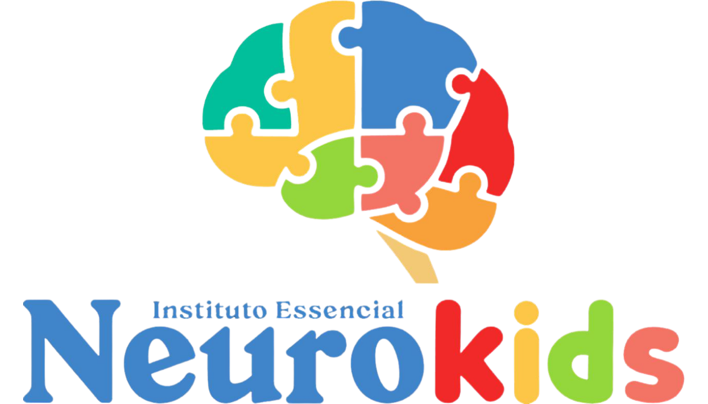

Instituto Essencial Neurokids
Acompanhamento especializado para o crescimento do seu Filho
Intervenções especializadas para desenvolver o potencial único de cada criança através de um olhar humano e transdisciplinar.

Ciência
& Afeto
Atendimentos
Terapêuticos
Intensivos
Somos um instituto de terapias específicas para crianças com Transtorno do Espectro Autista (TEA) e outras condições neurodivergentes ou transtornos do neurodesenvolvimento. Nossa metodologia é baseada no afeto e na ciência, preparando cada pequeno para as conquistas do dia a dia.
Acreditamos que a família é a peça fundamental. Por isso, oferecemos um ambiente transdisciplinar onde pais e profissionais caminham juntos pela autonomia da criança.
- Fonoaudiologia
- Fisioterapia
- Psicologia
- Intervenção ABA
- Terapia Ocupacional e Integração Sensorial de Ayres
- Musicoterapia
- Terapia Alimentar (Nutricionista)
- Orientação Parental
- Avaliação Neuropsicológica
- Neuropsicopedagogia
Por que escolher o
Instituto Essencial Neurokids?
Abordagem Transdisciplinar
Terapeutas ocupacionais, fonoaudiólogos, psicopedagogos e neurologistas atuando em conjunto, evitando a fragmentação do tratamento e olhando a criança como um todo.
Foco em Evidências Científicas
Técnicas respaldadas pela neurociência, como integração sensorial e estimulação cognitiva, com embasamento teórico sólido e eficácia comprovada.
Atendimento Personalizado e Humanizado
Um projeto terapêutico único para cada criança, respeitando o tempo e as necessidades específicas de cada família.
Participação da Família
O envolvimento de pais e cuidadores é parte essencial do sucesso, com orientação e suporte constante para aplicar as estratégias também em casa.
Estrutura e Ambiente Terapêutico
Espaços planejados com salas sensoriais e equipamentos específicos para engajar a criança e potencializar os resultados das sessões.
Metodologias Baseadas em Evidências
O Instituto emprega técnicas como a Análise do Comportamento Aplicada (ABA) e protocolos de integração sensorial padronizados. A eficácia dessas metodologias é comprovada por meta-análises e revisões sistemáticas na literatura internacional, que demonstram ganhos significativos em habilidades funcionais e sociais.
Neuroplasticidade e Intervenção Precoce
A infância é um período de alta plasticidade cerebral, onde as conexões neurais são moldadas pelas experiências. Intervenções como as do Instituto aproveitam essa "janela de oportunidade" para consolidar habilidades de comunicação, socialização e regulação emocional — como aponta o estudo de Dawson et al. (2012), a intervenção precoce baseada em evidências pode normalizar a atividade cerebral em crianças pequenas com autismo.
Especialistas dedicados ao
neurodesenvolvimento.
Abordagem transdisciplinar e integrada.
Nossas intervenções são pautadas na ciência e no afeto, garantindo que cada criança receba o suporte exato para sua evolução cognitiva, motora e social.
Fonoaudiologia
Desenvolvimento da linguagem, fala e motricidade orofacial com foco em comunicação funcional.
Fisioterapia
Estimulação motora especializada para fortalecer o desenvolvimento físico e funcional da criança.
Psicologia
Acompanhamento emocional e comportamental com escuta acolhedora para a criança e a família.
Intervenção ABA
Análise do Comportamento Aplicada para redução de barreiras e aquisição de novas habilidades.
Terapia Ocupacional e Integração Sensorial de Ayres
Integração sensorial e autonomia nas atividades diárias para uma vida mais independente.
Musicoterapia
Uso terapêutico da música para estimular comunicação, expressão e regulação emocional.
Terapia Alimentar
Acompanhamento com nutricionista especializado para uma relação saudável com a alimentação.
Orientação Parental
Suporte e capacitação para os pais atuarem como parceiros ativos no desenvolvimento do filho.
Avaliação Neuropsicológica
Mapeamento cognitivo detalhado para direcionar o plano terapêutico mais adequado à criança.
Neuropsicopedagogia
Suporte especializado nos processos de aprendizagem e superação de desafios acadêmicos.
Precisa de um atendimento transdisciplinar para seu filho?
Agendar uma triagem inicial
O que as famílias
dizem sobre nós.
Venha nos
conhecer.
Um espaço planejado nos mínimos detalhes para o conforto e desenvolvimento do seu filho.
Endereço
Edifício Spazio Duo - Taguatinga Sul
Sala 301, 3º andar - Brasília, DF
Horários
Segunda a Sexta: 07:00 às 18:00
| Sábados: 07:00 às 12:00
essencialneurokids@gmail.com
@essencialneurokids